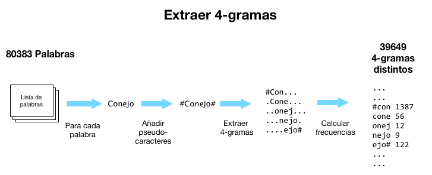
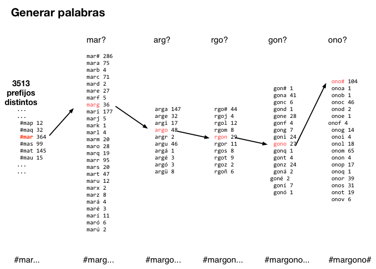

Un idioma como un conjunto de n-gramas
La idea principal es que podemos describir un idioma como la frecuencia con que aparecen combinaciones de letras concretas (n-gramas). Es bastante intuitivo: en español es bastante frecuente la combinacion "ción" pero no aparece nunca "thou" que es muy común en inglés. Si generamos tablas de frecuencias de n-gramas podemos usarlas para intentar adivinar a que idioma pertenece una palabra. Pero no sólo eso: támbien podemos usarlas para inventar palabras que parezcan de un idioma. ¿Puedes distinguir las reales de las inventadas?
Extrayendo 4-gramas
Para comenzar partimos de un lemario (listado de palabras de un idioma) público para cada idioma. Se extraen todas las subcadenas de 4 letras (incluyendo pseudo-caracteres para el principio y fin de palabra) y se calcula la frecuencia de cada uno.En nuestro lemario, existen unas 80.000 palabras que contienen unos 39.000 4-gramas diferentes de los mas de un millón posibles : 27 caracteres + 5 caracteres acentuados + "ü" = 33 caracteres distinto + principio o fin de palabra (solo en la primera posicion) = 34*33*33*34=1.258.884. El más frecuente es "nte#" que aparece 3198 y hay XXX que aparecen sólo una vez.
Generando nuevas palabras
Estas tablas de frecuencias de cada idioma podemos usarlas para generar palabras que parecen reales. Comenzamos con un prefijo (grupo de 4 letras con que incluye en pseudo-carater de unicio de palabra) y vamos añadiendo letras de la siguiente manera: tomamos las tres ultimas letras de la palabra que estamos generando y de entre los 4-gramas que empiezan por esas tres letras elejimos uno al azar, ponderando la probabilidad de elegirlo en base a su frecuencia. Y seguimos añadiendo letras hasta que encontramos un pseudo-caracter de fin de palabra.
Limitaciones
El sistema no incluye ninguna manera de controlar por el tamaño de las palabras y genera con cierta frecuencia palabras anoramente largas. Otros problemas vienen del uso de los caracteres acentuados. Con cierta frecuencia aparecen palabras con 2 caracteres acentuados o con una u con diéresis que no esta precedida por una "g". Igualmente aparecen palabra que "deberian" estar acentuadas y no lo estan, las terminadas ne "onico/a", parecen normales , pero la falta de tilde las delata.
Otra limitacion es el lemario, que no esta completo, y creo que eería mas divertido si incluyeremos todas las formas verbales.